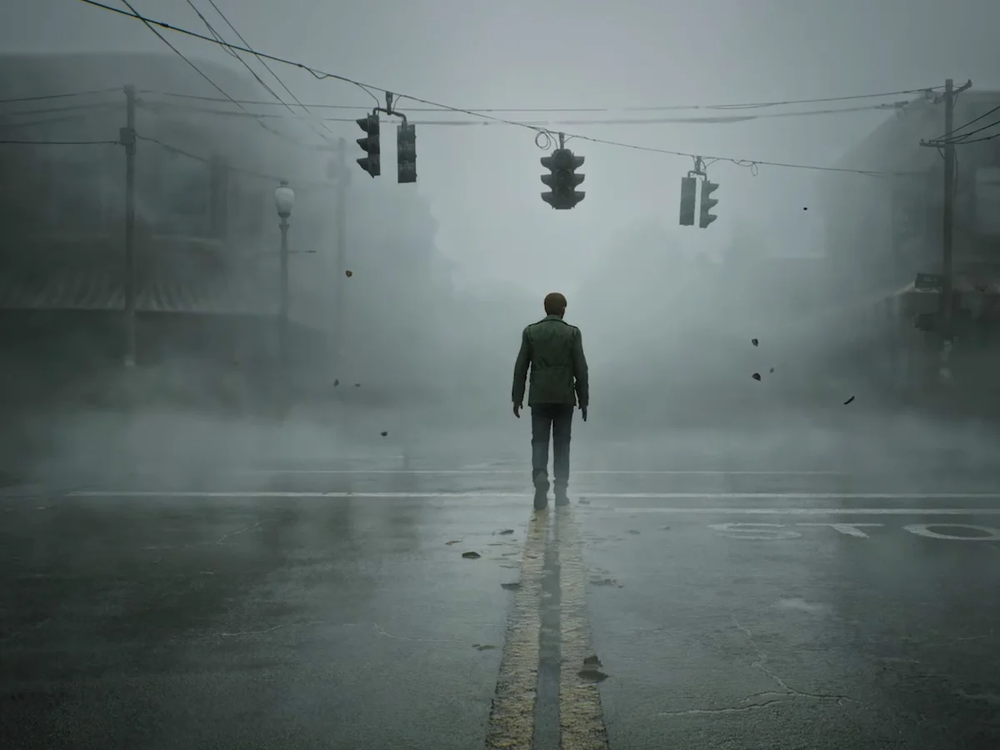
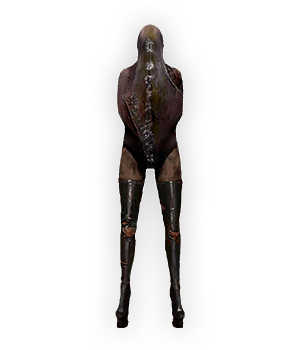
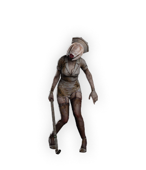
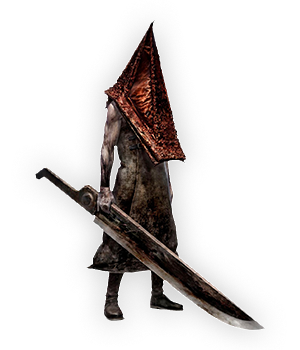
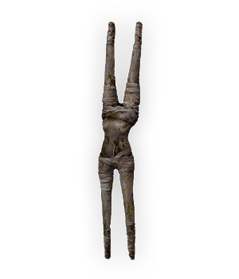

Silent Hill 2 is a psychological horror survival game, and you play as the main character James Sunderland who travels around the foggy town of Silent Hill looking for his wife, Mary.

During the game you will encounter various monsters that you must defeat in order to progress through the game:




Our research is looking into the various media which inpired this amazing gameplay!